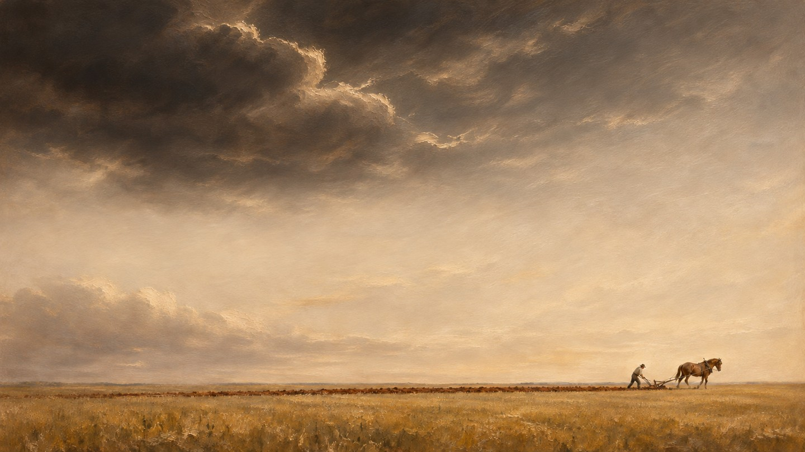
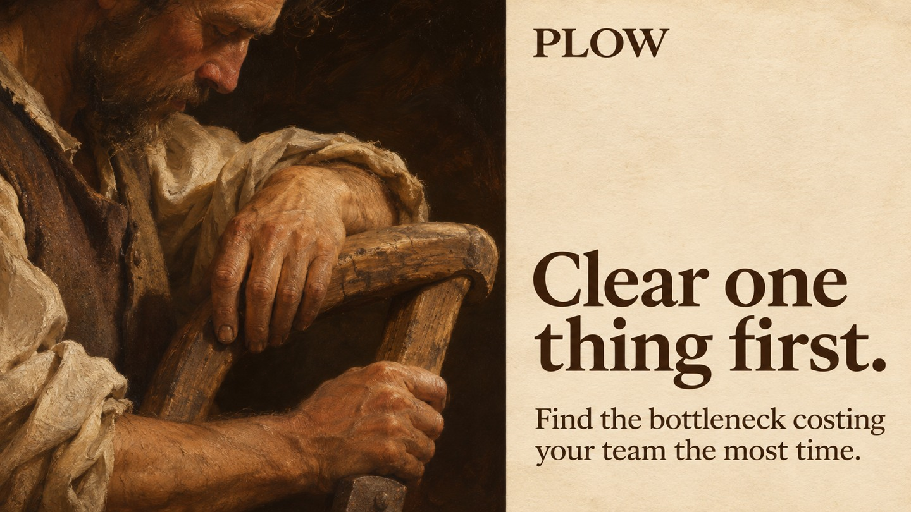

plow
Know your ground.
See where your coding agents get stuck, from the first message to a feature in customers’ hands.
See a deliveryGood code starts with good ground.
The codebase, checks, and tools shape what agents can do.

Are your agents thinking or waiting?
A coding agent can spend more time waiting on tools and checks than working on the change.
Illustrative delivery
A feature reaches customers.
3 hours 10 minutes from thread start to release
- Thread started
-
Pull request opened
25 min from thread start
-
Pull request merged
2 hr 15 min from opening
-
Release published
30 min from merge
- Access verified
Look here first. The pull request spent 2 hours 15 minutes between opening and merge.